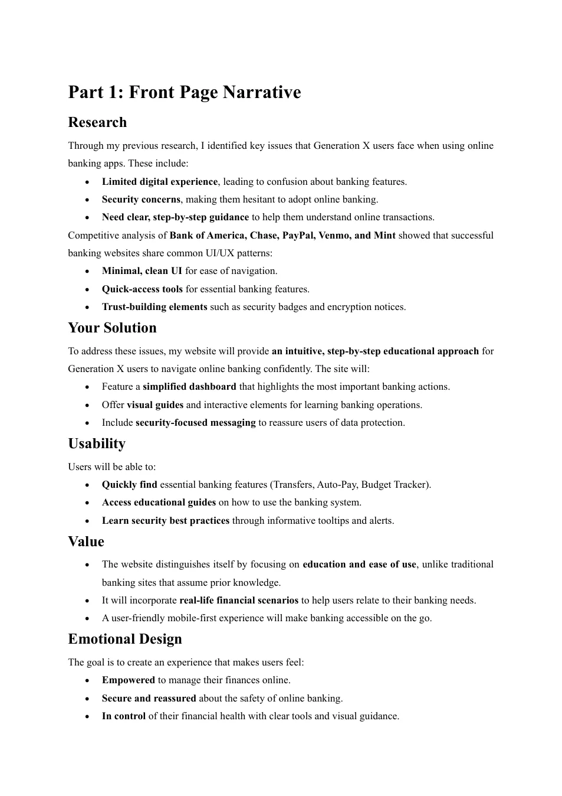

DES 112 · UI/UX DESIGN · COURSEWORK
Banking Guide — UX Concept
A research-led educational banking interface concept for Generation X users.

01 / USER CHALLENGE
Help new digital banking users
The coursework identified concerns for some Generation X users: unfamiliarity with online banking features, security hesitations, and the need for clear step-by-step guidance. The proposed experience focuses on learning rather than duplicating a full banking service.
02 / COMPETITIVE STUDY
Patterns that build confidence
The comparative study discusses Bank of America, Chase, PayPal, Venmo and Mint, focusing on understandable navigation, easily found common actions and visible security cues. The coursework proposes simplified tools and guidance informed by these observations.
03 / PROPOSED STRUCTURE
Outline & design direction
The proposed information architecture includes Home, Guides, Transactions and Security Tips. The brief specifies desktop (1440px) and mobile (375px) wireframes, high-contrast blue/green accents, a simplified dashboard and a Get Started learning action. These were design intentions in the coursework, not verified deployed features.
04 / RESEARCH ARTIFACTS
Submitted visual evidence

ORIGINAL COURSE MATERIALS
Explore the source
The archive includes planning documents and a Figma wireframe URL. The site presents submitted research rather than claiming a launched or validated product.